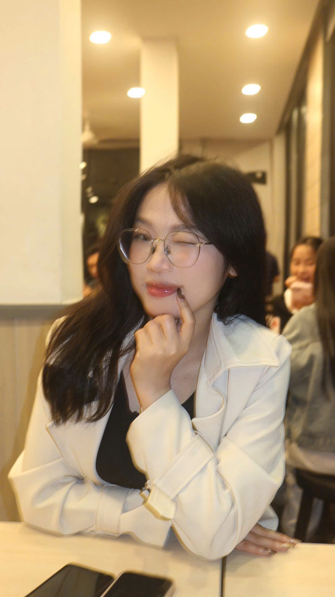
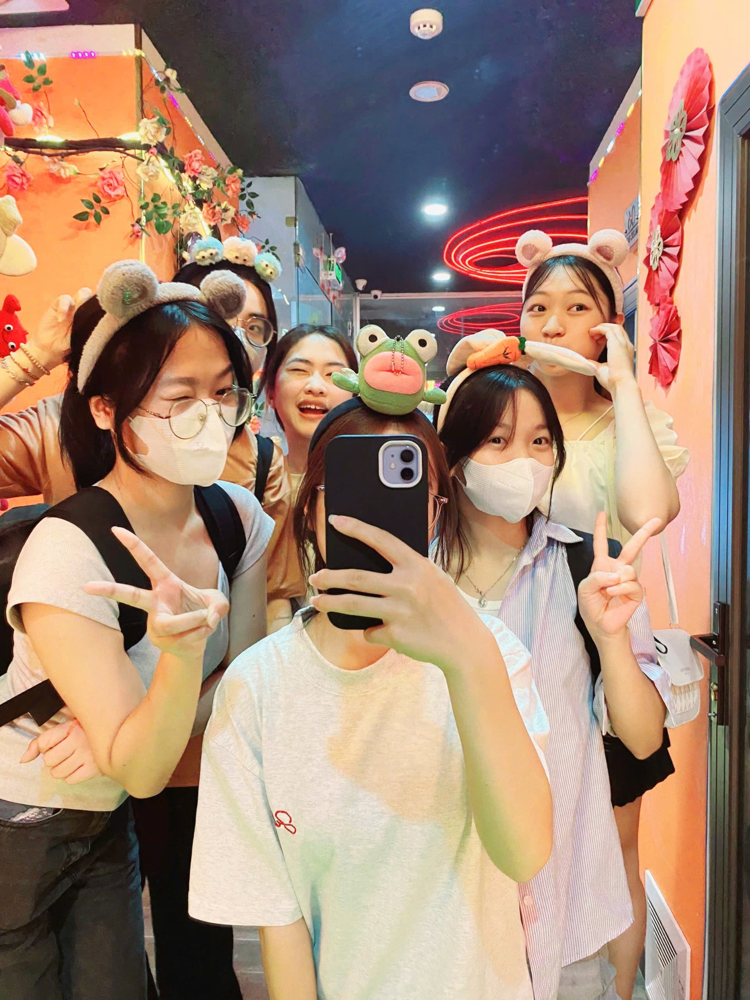
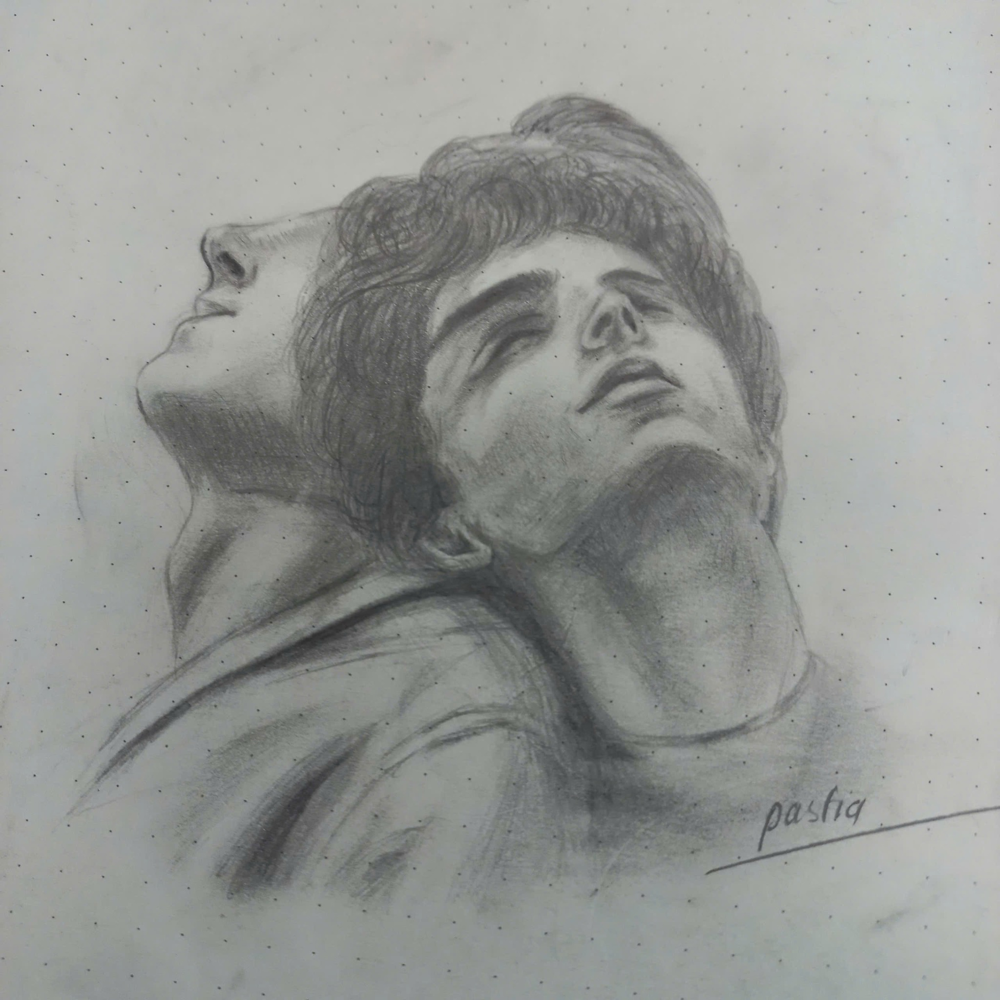
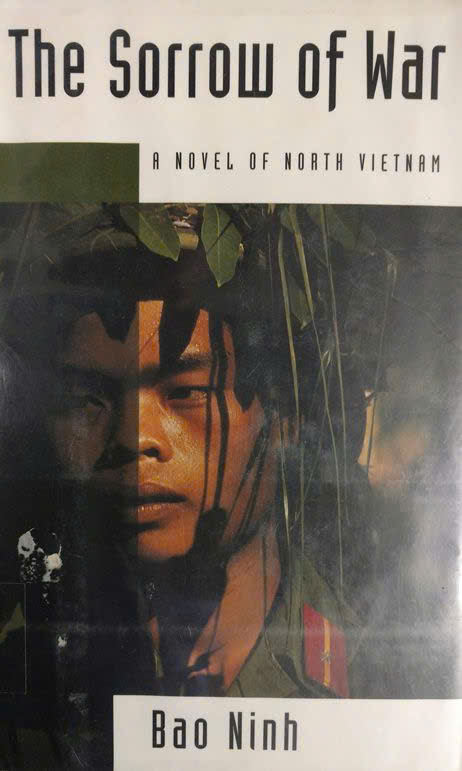
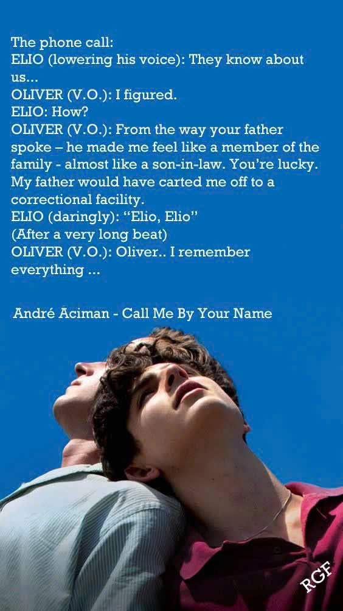
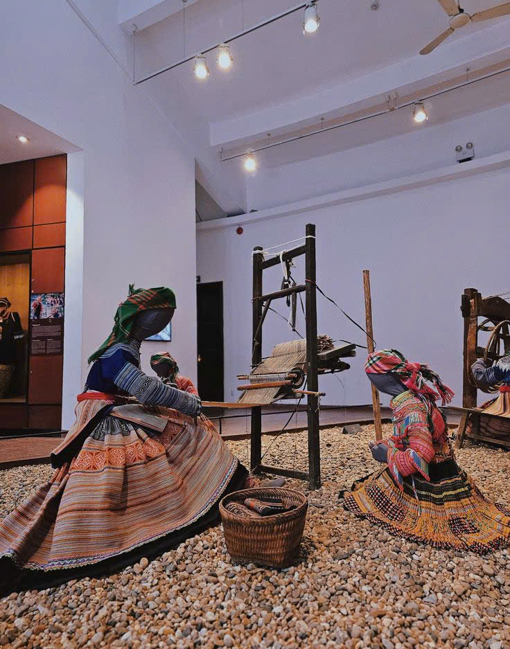
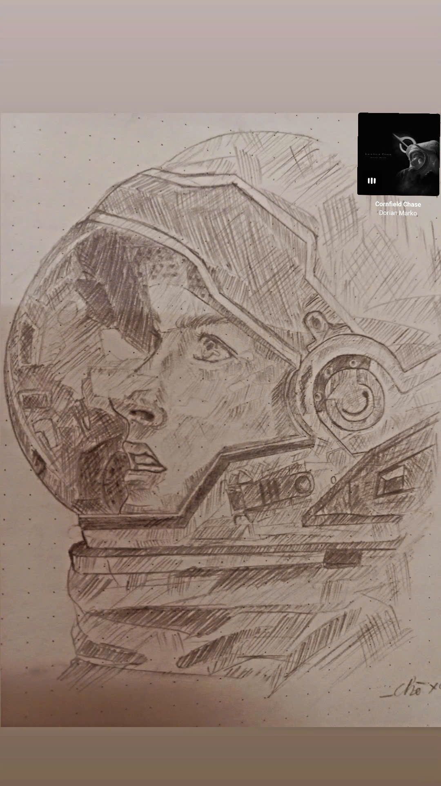
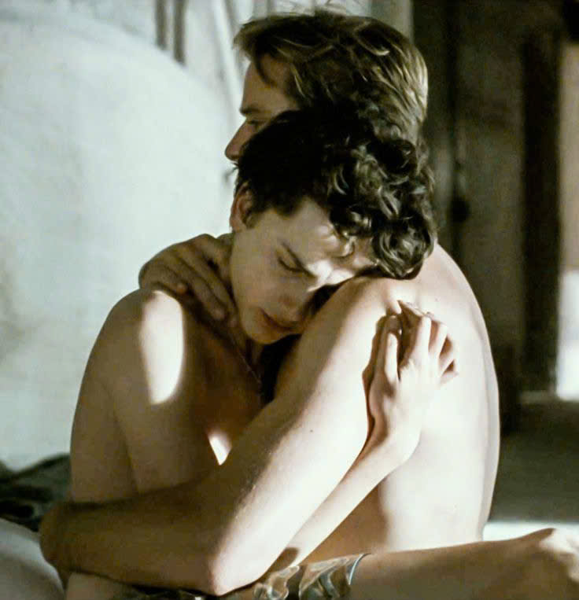

HIGH SCHOOL
THPT Chuyên Phan Bội Châu
Những năm tháng trong môi trường chuyên nghiệp và giàu tính cạnh tranh. Văn học trở thành nền tảng cho khả năng quan sát, cảm nhận, tư duy bằng ngôn ngữ và kể chuyện.
Literature · Communication · CommunityNGUYỄN THỊ THÙY · K63 · FTU
A curious mind moving between international business, languages, creativity and the stories people tell.

a little piece of me ✦A curious mind.
A creative heart.
Tôi là một người thích khám phá, trải nghiệm và thử sức với những điều mới. Tôi luôn tò mò về thế giới xung quanh — từ hội họa, văn học, phim ảnh cho đến ngôn ngữ và văn hóa của các quốc gia.
Từ một học sinh yêu Văn, tôi bước vào Kinh tế đối ngoại và học cách nhìn thế giới qua một lăng kính khác: kinh doanh, marketing, giao tiếp và những trải nghiệm thực tế. Tôi chưa muốn giới hạn mình vào một con đường duy nhất.

Mỗi chặng đường cho tôi một kỹ năng, một góc nhìn và một lý do mới để tiếp tục khám phá.
Những năm tháng trong môi trường chuyên nghiệp và giàu tính cạnh tranh. Văn học trở thành nền tảng cho khả năng quan sát, cảm nhận, tư duy bằng ngôn ngữ và kể chuyện.
Literature · Communication · CommunityKinh tế đối ngoại đưa tôi vào một thế giới khác: kinh tế, kinh doanh, tính toán và tư duy định lượng. Không phải lúc nào cũng dễ, nhưng chính sự khác biệt khiến hành trình thú vị hơn.
International Economics · Growth · AdaptabilityTôi thích những công việc cho phép mình vừa học vừa va chạm với thực tế.
CLUB
Giao tiếp, kết nối, phối hợp trong tập thể và chủ động xây dựng các mối quan hệ bên ngoài.
Communication · NetworkingYEAR 2
Trải nghiệm môi trường startup và tham gia planning, sales, communication, problem solving và coordination.
Management · Startup · Problem solvingSPORTS
Tìm hiểu sản phẩm, tiếp cận khách hàng và hỗ trợ marketing cho sản phẩm thể thao.
Sales · Marketing · Product
Vẽ là cách tôi chậm lại, quan sát kỹ hơn và biến một cảm xúc thành hình ảnh.

Những câu chuyện khiến tôi nhìn con người sâu hơn — đặc biệt là văn học Việt Nam.

Điện ảnh, những khung hình đẹp và những câu chuyện còn ở lại sau khi bộ phim kết thúc.

Mỗi ngôn ngữ mở ra một cách nhìn mới về con người, lịch sử và đời sống.
Không phải CV. Không phải thành tích. Chỉ là những điều nhỏ tạo nên cách tôi nhìn thế giới.


Tôi muốn dùng những năm đại học để thử nghiệm, tích lũy trải nghiệm và tìm ra lĩnh vực mình thực sự muốn theo đuổi lâu dài — trong một môi trường quốc tế, năng động và có tính kết nối cao.
08 / Let's connect
Nếu bạn muốn kết nối, trao đổi một ý tưởng hoặc đơn giản là nói chuyện về nghệ thuật, ngôn ngữ, business — I'd love to hear from you.
2411110278@st.ftu.edu.vn ↗